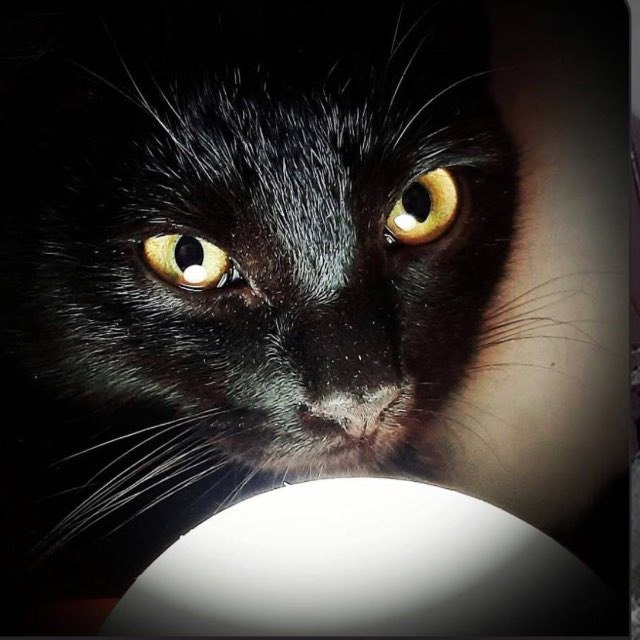

✨ Стаття дня
Мурка Бобрівна
Напівбогиня у всесвіті TimothyVerse. Має здатність мурчати, але не говорити людською мовою. Зникає раз на рік рівно на 42 секунди. Її походження — загадка, як і її порода. Вперше з'явилася у 2019 році, й відтоді наглядає за порядком реальності... муркаючи.
📚 Усі статті
🔍 Дослідження TimothyVerse
Цей розділ Вікі присвячено вивченню всесвіту Тімотьки: персонажі, події, технології, теорії, загадки та муркотливі аномалії.